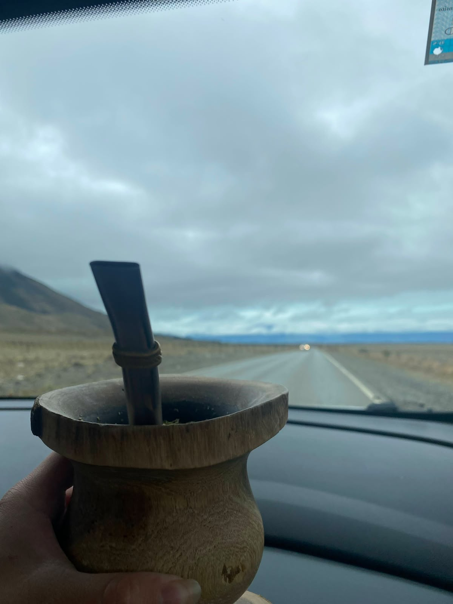

En la ruta

El mate es el mejor copiloto para cualquier viaje en auto. No importa si el destino está a una hora o a mil kilómetros, un buen mate hace que el camino sea mucho más llevadero.
Es la compañía perfecta para no dormirse, charlar de la vida y disfrutar de los paisajes por la ventana mientras sumamos kilómetros.